Varuna360 is a professional astrology chart calculator that bridges Vedic and Western astrology in a single application, powered by Swiss Ephemeris calculations.
Whether you come from Western or Vedic astrology, you will find familiar tools here. Many features exist in both traditions under different names — Varuna360 uses the Vedic terminology by default, but offers the Western equivalents as well. If a concept is unfamiliar, chances are you already know it under a different name.
The software offers three zodiac modes, selectable from the toolbar buttons. The active mode is highlighted in green:
Aditya Circle (default) — A Tropical Vedic system mapping the 12 Solar Deities (Adityas) to zodiac signs. This is the signature feature of Varuna360.
Tropical Classic — Standard Western tropical astrology (Aries, Taurus, Gemini, etc.). If you are a Western astrologer, start here.

Sidereal — Traditional sidereal zodiac with your chosen ayanamsa (Lahiri, KP, Raman…). Uses Western/Sanskrit sign names, which are essentially the same (Aries = Mesha/Ram, Leo = Simha/Lion, etc.). The signs align with the star constellations, but the actual star divisions are the nakshatras, not the signs. Toggle with Alt+S.

Each zodiac mode also has an alternative naming option, accessed by clicking the same button a second time. This gives 6 total combinations:
Aditya Circle with Western names — Uses the Aditya Circle zodiac (the 30 degree shift from Ernst Wilhelm) but displays familiar Western sign names instead of Aditya names. This is probably the most accessible version of the Aditya system: you get the power of the Aditya zodiac without needing to learn 12 new names right away. The Western sign names also carry a rich mythology that most people already know. Many users may prefer this as a starting point before learning the full Aditya names.

Tropical Classic with Aditya names (advanced) — Uses the standard Western tropical zodiac but displays Aditya names. This is an advanced, experimental option. Useful for those who want to test whether the zodiac shift described by Ernst Wilhelm is happening, or simply to explore the Aditya naming on the classical framework. Do not use this unless you understand both systems or your intuition is guiding you there.

Sidereal with Aditya names (advanced) — Sidereal zodiac with the Aditya god names instead of the traditional Western/Sanskrit sign names. This option exists but is not commonly used in India. It is available for those who want to explore the Aditya framework applied to the sidereal zodiac.

See the Zodiac Modes section for more detail on all 6 options.
The default calculation settings follow Ernst Wilhelm's Tropical Vedic approach. If you are familiar with his courses, you will feel right at home. If you prefer standard Western astrology, simply switch to Tropical Classic mode — all classic Western options are fully available. You can switch at any time without losing any data.
The main window is organized as follows:

The easiest way to load charts is drag and drop: drag one or more chart files, or a whole folder of them, from your file manager onto the application window. They load straight away.

Drag and drop a chart file directly onto the app to load it.
Two chart formats
Both are fully supported everywhere a chart can be opened, dropped or saved, and File > Save Chart As writes either one, so it doubles as a converter between them: open a Kala chart, save it with a .toml name, and you have a readable copy that keeps the same instant.
Other ways to load charts:
There are two ways to create a chart:
Varuna360 offers five chart visualization styles. Press F2 to cycle through them, or use View > Cycle Chart View. The cycle order is South Indian → Wheel → North Indian → Body Graph → Cards of Truth.
Press F (or the status-bar fullscreen glyph) to send the current chart view fullscreen, and F or Esc to return. This works on every tab that shows a chart, not just the main Chart tab: the Nakshatra wheel, the Antikythera map, and the dual comparison views (Eclipse Reading, Compatibility, Transit, Solar Return) each go fullscreen correctly. While a chart is fullscreen, F2 still cycles the main chart style, and the comparison views keep refitting when you toggle their overlay. On a tab with no chart view the key does nothing and the status bar says so.
The most graphically designed view. Features a diamond/square layout with sign icons and a custom stone background that changes with the selected theme (light themes use a light stone, dark themes use a dark stone).

Two themes. The South Indian chart can be drawn in either of two visual styles, chosen in Settings > Chart Display > South Indian theme. Both show exactly the same chart. Only the drawing changes, and the setting applies to every South Indian view in the app at once.
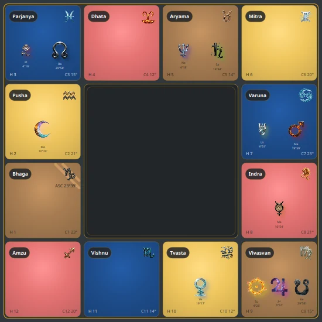
The same chart in the Conventional theme. Sign names sit in pills, the sign icon sits opposite them, and each card carries its house number and cusp degree.
If you find the Artistic stone background busy, or you simply prefer a flatter look, the Conventional theme gives you the same information with far less texture behind it. Reading one card closely shows everything it carries:
One optional extra is worth knowing here. Switch on Settings > Zodiac & Calculation > Cards of Truth inside the chart and every sign gains a small playing card beside its name.
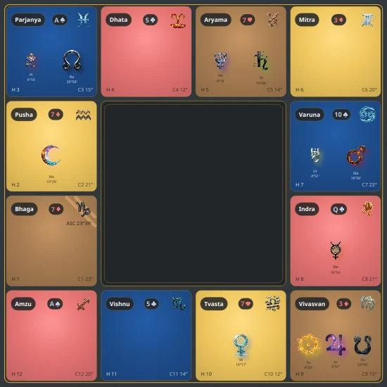
The same chart with the in-sign cards switched on. The card shown in a sign is the card of that sign's ruling planet.
One switch, three charts. The cards appear in the Conventional South Indian chart shown here, in the Wheel and in the North Indian square, so you are not choosing a view when you turn it on. The Body Graph is left out on purpose. So is the Artistic South Indian theme, so if you have the cards switched on and cannot see them, check which of the two South Indian themes you are in.
Because a planet can rule two signs, the same card turns up twice. Mars, Venus, Mercury, Jupiter and Saturn each rule a pair of signs while the Sun and the Moon rule one each, so twelve signs show seven different cards. It is off by default, since it adds a plaque to every box of a chart people read all day.
Switching the cards on also puts an Order button in the corner of the chart, the same one the Cards of Truth view carries. It names the position order in use and switches it, and because there is only one such setting in the whole program, pressing it here changes the Cards of Truth view too.
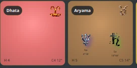
Every box is laid out the same way. Top-left: the sign name pill. Top-right: the sign icon. Centre: the planets in that sign, each with its degree. Bottom-left: the house number. Bottom-right: the cusp falling in this sign, with its degree.
C4 7° in the Parjanya card means the 4th house cusp falls at 7 degrees
of Parjanya.The South Indian chart is a sign-centric format: the signs are always in the same position on the grid, and the houses (numbered from the Ascendant) rotate around them. This makes it excellent for:
Transit Overlay (F3) — When transit mode is active, the center box displays transit planets alongside the natal chart, letting you compare transiting positions directly inside the South Indian layout.

Transit overlay in the South Indian chart. The center box shows the transit chart while the outer boxes display the natal chart.
The Conventional theme does the same thing in its own drawing style: the centre medallion fills with a complete miniature of the transit chart, twelve small element cards laid out exactly like the twelve large ones around it.
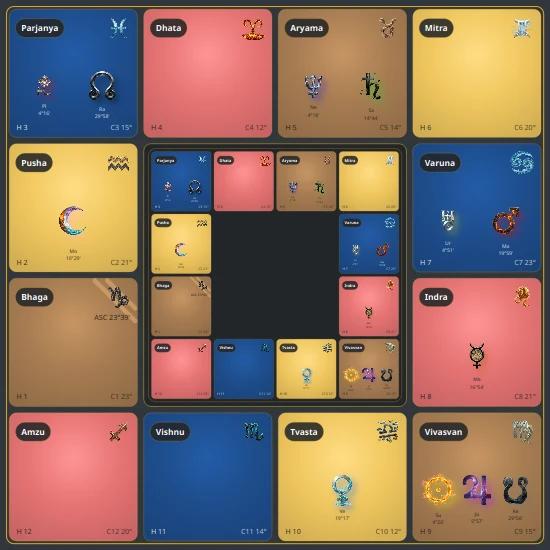
The Conventional theme with transit mode on.
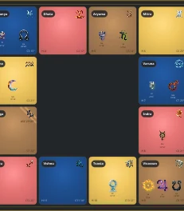
The centre box close up. The mini chart keeps the full element palette, so a transiting planet's sign reads the same way in the small chart as in the large one.
Interactive features:
The most information-dense and optimized view. A circular zodiac wheel with concentric rings displaying multiple layers of data simultaneously.

+ Tropical / + Aditya)


Standard Western house layout: house 1 starts at the exact Ascendant degree, so the houses come out unequal in size. Compare it with the sign-based layout, where each house is exactly one sign.

Double-click any planet to open its details. Here Mars in its Own Sign (Dhata/Aries) shows the full Aditya description with a Contents sidebar for navigation.
When Retinue Rings (F5) are enabled, the wheel becomes fully interactive. Three layers of interaction let you explore the chart's retinue structure:
1. Hover over a sector (any colored ring segment): the corresponding house number lights up in the center of the wheel. This shows you which house that sector activates. For example, hovering over a Gandharva sector in Mitra will highlight the houses that Mitra's Gandharva activates. A tooltip shows the being's name and element.

2. Hover over a house number (in the center): all sectors connected to that house light up on the wheel. This is the reverse view, showing you every being across every sign that activates this house. Useful for seeing which retinue beings are channeling energy into a specific life area.

3. Double-click any sector to open the Sector Info Dialog. This popup gives you the full structural breakdown for that sign's retinue:

A square chart with horizontal and vertical lines showing all planets including outer planets (Uranus, Neptune, Pluto) when enabled with F8, plus Rahu and Ketu.

The North Indian chart is a house-centric format: the houses are always in the same position (1st house at top, 7th at bottom), and the signs rotate around them. This makes it excellent for:
Transit Overlay (F3) — When transit mode is active, a smaller diamond chart appears overlaid on the natal chart, showing the transiting planets in each house. The transit overlay uses the same element-colored houses and sign icons as the natal chart, making it easy to compare natal and transit positions at a glance.

Transit overlay on the North Indian chart. The smaller inner diamond shows transit planets while the outer diamond displays the natal chart. The dasha panel on the left shows the active dasha period.
The fourth view, and the one with no equivalent in other astrology software. Instead of a grid or a circle, the twelve Adityas are mapped onto a human silhouette, and each planet is drawn on the part of the body its Aditya governs.
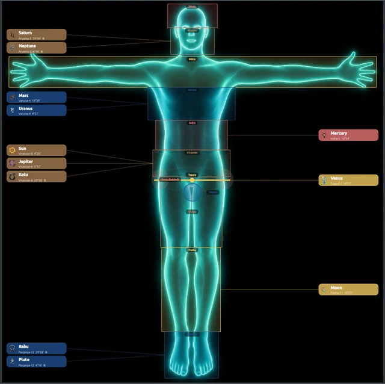
The Body Graph. Each planet label is connected by a line to the body zone of the Aditya it occupies. Zone names are printed on the silhouette itself (Dhata at the head, Aryama at the face, Mitra across the arms, and so on down to Parjanya at the feet).
The mapping runs head to foot in Aditya order, so a chart with several planets in the upper zones looks visibly different from one weighted towards the legs and feet. That is the point of the view: it makes a distribution you would have to count out on a wheel into something you take in at a glance.
Planets keep their usual colour coding, and their labels carry the same information as
elsewhere (sign, house number, degree, and an R for retrograde). Double-click any
planet label to open its full details dialog, exactly as in the other three views.
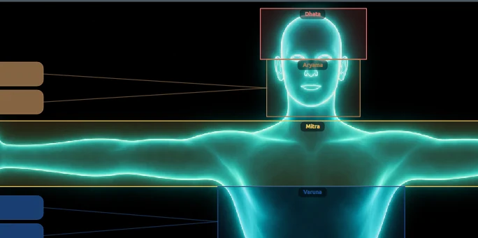
Close-up of the upper body. Saturn and Neptune both sit in
Aryama, so both lines run to the face. Neptune's R marks it retrograde. The small
dark boxes on the silhouette are the zone names: Dhata at the head, Aryama at the face,
Mitra across the arms, Varuna at the chest.
Rashi Aspect Panel (Shift+F2) — The Body Graph can share the screen with a South Indian rashi chart showing sign aspects. Press Shift+F2 to show or hide it, or use View > Toggle Rashi Aspect Panel.
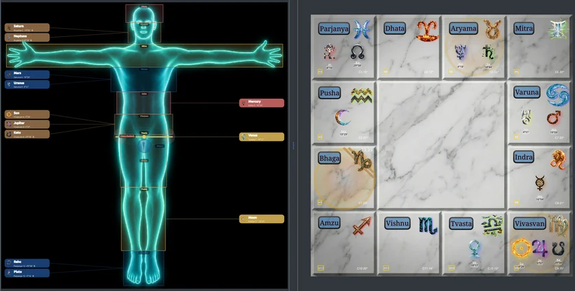
Body Graph with the rashi aspect panel open beside it. The two sit in a resizable splitter, so you can drag the divider to give either side more room.
The arrows appear when you hover, not before. At rest the panel looks like a plain South Indian chart, and that is deliberate: drawing every rashi aspect at once produces a thicket nobody can read. Point at a sign and its aspects light up in red, while the matching zones highlight on the body beside it. Move the mouse away and the chart goes quiet again.
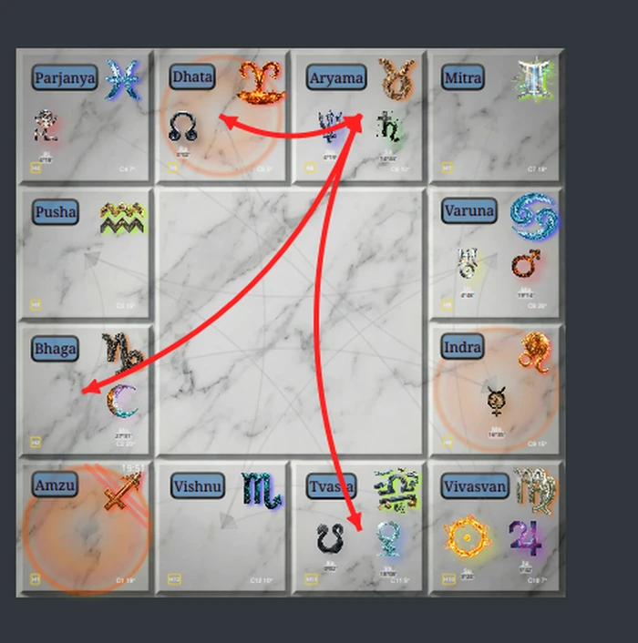
Hovering Aryama. Three arrows appear, and their heads are the whole message. Aryama and Dhata are joined by an arrow with a head at each end: they aspect each other, so the influence runs both ways. The arrows to Bhaga and Tvasta have one head each, at the far end: Aryama influences them, and they do not influence Aryama back.
So the rule for reading them is short: count the arrowheads. Two heads means a two-way relationship. One head means it only travels in the direction the head points. That asymmetry is not a quirk of the software, it is how these aspect tables are built.
Why the sign casts, and not the planet. Every sign carries a founding principle, and those principles depend on one another. Dhata, which Western astrology calls Aries, is the survival of the body: the logic of staying alive, the contest. Aryama, Taurus, is the body receiving what it needs afterwards, the resources, the milk. You cannot receive anything unless you have survived first, so Dhata reaches into Aryama by the nature of the two principles. That is what a sign aspect is: a relationship between the realities two signs stand for. The hovering example above shows exactly that pair, joined both ways.
This is why the planet does not qualify the aspect. The relationship belongs to the signs, and the planet standing in one of them is what brings it to life. Which planet it happens to be changes what the influence feels like, not whether it travels.
One more thing that will otherwise puzzle you: an empty sign draws no arrows. A sign only casts aspects if it actually holds a planet, so hovering an empty box gives you nothing. That is correct behaviour, not a bug.
“Holds a planet”, as the program currently counts it, means one of the traditional grahas: Sun, Moon, Mars, Mercury, Jupiter, Venus, Saturn, Rahu or Ketu. If you have the outer planets switched on and hover a sign holding nothing but Neptune, no arrows appear.
Which aspect table the panel uses is your choice, set in Settings > Chart Display > Rashi aspects (Body Graph). Three are available: Quadrant (the default), Element, and Conventional. They are three different tables of which sign aspects which, not three ways of drawing the same thing, so you will see different arrows when you switch. The program stores the three tables and nothing else: it does not carry a definition of what separates them, so this manual will not invent one. If you have no reason to prefer a particular table, leave it on Quadrant.
The fifth view, and the only one that is not a chart in the usual sense. The Cards of Truth system pairs a birth date with ordinary playing cards. One card belongs to you, and thirteen more sit around it in a fixed pattern called the birth spread. This view draws that spread and shows which of your planets lands on each card.
You do not need to know anything about cards to read it. Every tile is one playing card, drawn with its rank and its suit. The small symbols sitting on a tile are the planets that belong to that card.
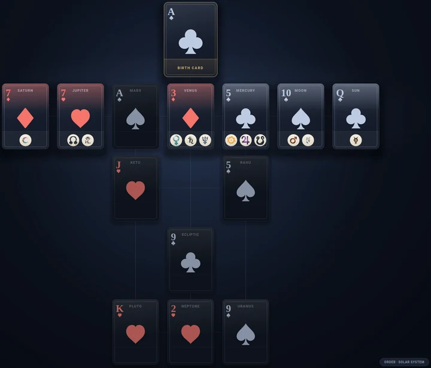
The birth spread. Small planet symbols sit on the cards they belong to, and the button in the bottom-right corner names the position order in use.
The layout never changes, and every place in it has a name:
A card carrying several symbols is holding several of your planets. An empty card is still part of the spread. It simply has nothing of yours on it.
Earth and Chiron are left out of the spread, which is what Kala does.
Position order
The seven main cards are always the same seven cards. What the position order decides is which planet name gets attached to each one. The button in the bottom-right corner switches between the two, and the same choice lives in Settings > Zodiac & Calculation > Cards of Truth:
It follows the divisional chart
The spread is not tied to the birth chart alone. A divisional chart, or varga, is built by cutting every sign into equal parts and reading the part a planet falls in as a sign of its own. The Navamsa, written D-9, cuts each sign into nine. Pick a division in the varga column and the spread follows it, with a badge in the corner naming the one you are looking at.
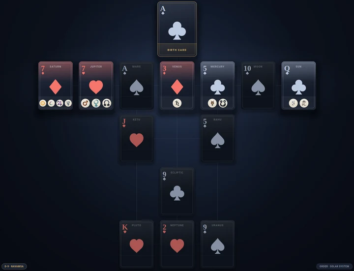
The same spread in the Navamsa. Compare it with the picture above: the fourteen cards are identical, and only the planets sitting on them have moved.
That is worth a sentence, because it explains what you are seeing. The fourteen cards come from your birth date, so no division can change them. What a division changes is the sign each planet sits in, and a planet is filed onto a card according to the planet that rules its sign. Switch to the Navamsa and your planets redistribute across a spread that has not moved.
To the right of the chart area, you will see a column of 12 numbered buttons labeled 1 through 12. These numbers represent the 12 signs of the zodiac, not house numbers.

In Vedic astrology, signs are traditionally referred to by number (1 = Aries/Dhata, 2 = Taurus/Aryama, etc.). This is the convention used here. Hover over any button to see the full sign name in the tooltip.
Clicking a number recalculates the chart from that sign's perspective as Ascendant. This is based on Ernst Wilhelm's structure course: by viewing the chart from each of the 12 sign positions, you can analyze how each Aditya's theme manifests in the person's life. For example, clicking "7" shows the chart with Tvasta as the 1st house, revealing the house structure from Tvasta's perspective.
Click the same button again to deselect it and return to the natal Ascendant. Only one sign can be selected at a time.
South Indian chart: When you select a sign, the center of the chart transforms into a mini North Indian chart showing the chart from the selected sign's perspective. The outer grid stays fixed (signs never move in South Indian). This gives you a quick house overview from any sign without leaving the South Indian view.

South Indian with sign 7 selected: Tvasta is the 1st house in the center mini chart. Notice the Ascendant cusp (H1) is in Indra but the 1st house is Tvasta, which would be impossible in a normal chart. This is a deliberate analytical view, not an error.
Wheel and North Indian charts: The entire chart redraws with the selected sign as Ascendant. The house numbers rotate so the selected sign becomes house 1.

Wheel with sign 7 selected: the entire chart redraws from Tvasta's perspective.
The right side of the window contains three stacked panel groups. Each group has multiple sub-tabs — click the header buttons to switch between them.

The three info panels with Karakas in enriched mode, Strength, and Aspects.
All three panels share the same interaction pattern:
Many of these concepts exist in both Vedic and Western astrology under different names. The table below maps the key terms:
| Vedic Term | Western Equivalent |
|---|---|
| Karakas (significators) | No direct equivalent — unique to Vedic system |
| Digbala (directional strength) | Angular strength — Hellenistic "busy places"; later "accidental dignity" |
| Uccha Bala (exaltation strength) | Essential dignity (exaltation/fall/domicile/detriment) |
| Chesta Bala (confidence) | No direct equivalent — synodic cycle strength (star planets), solstice/phase (luminaries) |
| Elements (Fire/Earth/Air/Water) | Same — identical concept in both systems |
| Modality (Moveable/Fixed/Dual) | Same — Cardinal/Fixed/Mutable |
| Vedic aspects (graha drishti) | Aspects with special planetary rules |
| Tajika aspects | Nearly identical to Western aspects (orb-based) |
| Avastha (planetary states) | No direct equivalent — age/vitality of planets |
| Avastha / Shame (Lajjitaadi) | No equivalent — uniquely Vedic concept (not the same as combustion or debilitation) |
The Karakas panel has four tabs: Karakas, Hora, Trim, Houses. Two of these tabs have enriched views accessible via the swap icon.
Karakas (Chara Karakas) — A concept unique to Vedic astrology with no direct Western equivalent. The 7 visible planets are sorted by degree within their sign, and each is assigned a significator role based on that ranking:

Each row also shows the cusp lord for the associated house. The cusp lord is determined by the actual house cusp degree (using your selected house system, e.g. Placidus or Campanus), which can differ from the whole sign lord when the cusp falls in a different sign. Ernst Wilhelm recommends using both perspectives. The AK and DK rows are highlighted as the most significant.
Karakas enriched view (swap icon) — When you click the swap icon, the Karakas tab shows an enriched version with each karaka's sign, house connections, avastha total (uplifted or afflicted), and dominant condition (Exalted, Shamed, Supported, Starved, etc.). Rows are colored by trimsamsa being type.

Hora — The Hora divides each sign into two halves — like two sides of a mountain. Each side represents a fundamentally different way the sign's love is expressed:

| Sun Hora (Aditya side) | Moon Hora (Naga side) | |
|---|---|---|
| Degrees | 0°-15° in odd signs, 15°-30° in even | 15°-30° in odd signs, 0°-15° in even |
| Action | Fire up your engines — actively express the Aditya's love | Take the brakes off — release unconscious blocks preventing love |
| When healthy | Powerful, truthful, purposeful expression | Natural flow of love once blocks are released |
| When afflicted | Aggressive, selfish, pushy — force twisted into ego | Sad, wounded, stuck — something is missing, can't feel love |
| What to work on | Express the Aditya purely, untwist selfishness | Let go of unconscious conditioning (the Naga work) |
The same affliction in the same sign produces completely different manifestations depending on which hora the planet is in. This is one of the most practical insights from Ernst Wilhelm's system.
Trimsamsa — Each sign is divided into 5 unequal segments ruled by Mars, Saturn, Jupiter, Mercury, and Venus. In the Aditya system, each segment activates a specific being from the Aditya's retinue:

| Ruler | Being | Element | Hora | Role |
|---|---|---|---|---|
| Mars | Gandharva | Fire | Sun | The warrior-inspirer — fires up the Aditya force with strength and purpose |
| Saturn | Rakshasa | Air | Sun | The destroyer of threats — permanently eliminates what blocks love |
| Jupiter | Rishi | Ether | Both | The only being spanning both horas — brings truth and wisdom to both sides |
| Mercury | Yaksha | Earth | Moon | The keeper of wealth — changes environment to retrain the unconscious |
| Venus | Apsara | Water | Moon | The mood-shifter — dissolves conditioning through emotional alchemy |
Houses — The default view shows a House Activation bar graph, a visual summary of which houses are most activated by the chart's retinue beings. Taller bars mean more retinue beings channel energy into that house.

Planetary Condition (swap icon) — When you click the swap icon on the Houses tab, you get a compact Planetary Condition table showing each planet's sign, house connections, avastha total (colored green for positive, red for negative), and lajjitaadi condition states. Rows are colored by trimsamsa being type. This is a condensed version of the full Planetary Condition page available in the fullscreen zoom.

Double-click anywhere on the Karakas panel to open a 6-page fullscreen view. Navigate between pages using the arrow buttons or clickable tab chips at the top. Each page shows an expanded version of the panel data with more columns and detail. A Copy All as JSON button at the bottom right copies the entire page content for use with AI tools.
At the bottom of every zoom page, a Five Being Types reference strip shows all five retinue beings (Gandharva, Rakshasa, Rishi, Yaksha, Apsara) with their ruler, element, hora side, and role. This serves as a quick legend while reading the data above.
Page 1: Karakas — The basic karaka ranking table at full screen size. Three wide columns (Karaka, Planet, Cusp Lord) with each row colored by its trimsamsa being type. The AK and DK rows are highlighted as the most significant.

Page 2: Karakas+ — The enriched karaka view with the full avastha
interaction matrix. Each row shows the karaka name, its retinue being type, and then
7 columns (Su, Mo, Ma, Me, Ju, Ve, Sa) showing how much each planet helps or harms
this karaka. Values are color-coded: green with + for positive (uplifting)
interactions, red with - for negative (afflicting) ones. A ~ is
neither: it marks a neutral relationship. Special markers
like OH (Own House) appear when a planet is in its own sign.
The Tot column sums all interactions. The Condition column is a plain-language
summary rather than a list of virupa values: it shows the planet's dignity when it has one
(Exalted, Moolatrikona, Own House), the word Shamed when a shame
relationship is present, Supported or Starved according to whether the planet's
total came out positive or negative, and the trimsamsa being type.

Page 3: Hora — Extended hora table with additional columns.
Page 4: Trimsamsa — Extended trimsamsa table with additional columns.
Page 5: Graph — The house activation bar graph at full size.
Page 6: Planetary Condition — The most data-rich page. Shows every planet (including Ascendant, Rahu, and Ketu) with its sign and degree, Hora and Trimsamsa house connections, retinue being name, the full 7-column avastha interaction matrix, total, and condition summary. For Rahu and Ketu (which have no sign of their own), the Lord of the sign they occupy is shown instead. Retinue being names are clickable: clicking one opens a popup showing the uplifted and afflicted expression totals for that sector.

Strength — Displays three planetary strength measurements for each of the 7 planets. The column headers can be toggled between Sanskrit terms and plain English by clicking the swap icon on the Strength panel header. Western astrologers will recognize these concepts under their dignity system:


Left: Sanskrit terms (default). Right: English terms (after clicking the swap icon).
| Vedic Name | English Name | What It Measures | Western Parallel |
|---|---|---|---|
| Digbala | Direction | Strength from house position — each planet has a "best house" where it gains maximum directional strength | Angular strength (Hellenistic: planets in angular places are strongest). Later called "accidental dignity" in Medieval astrology — "accidental" here means "circumstantial", not "by chance" |
| Uccha Bala | Energy | Strength from sign position — how close the planet is to its exaltation degree | Essential dignity — exaltation, domicile, detriment, fall |
| Chesta Bala | Confidence | A composite strength that varies by planet type. For the 5 star planets (Mars, Mercury, Jupiter, Venus, Saturn) it is based on their synodic cycle and apparent motion — this is closely related to retrograde status (see note below). The Sun uses Ayana Bala (solstice strength) and the Moon uses Paksha Bala (lunar phase strength) | No direct Western equivalent — partially relates to Hellenistic concepts of planetary speed and sect |
R* 52.3) as a quick visual indicator. The Sun and Moon are never
retrograde, so they never show this marker — their Chesta values come from entirely
different calculations (Ayana Bala and Paksha Bala respectively).
Elements — The distribution of planets across Fire, Earth, Air, and Water. This is identical in both Vedic and Western astrology — same four elements, same sign assignments. Shown as percentages with the list of planets in each element. The dominant element is marked with a star.

Modality — The distribution across the three modalities. Same concept in both traditions, just different names:
| Vedic Term | Western Term | Signs |
|---|---|---|
| Moveable (Chara) | Cardinal | Aries, Cancer, Libra, Capricorn |
| Fixed (Sthira) | Fixed | Taurus, Leo, Scorpio, Aquarius |
| Dual (Dwiswabhava) | Mutable | Gemini, Virgo, Sagittarius, Pisces |

Click the swap icon on the Modality tab to toggle between the standard modality view and the Rajju, Musala, and Nala yoga calculation modes. These are traditional groupings of signs that reveal different structural patterns:

Click on any yoga name to open a detailed description popup explaining the yoga's meaning, how it manifests with healthy avasthas, and how it manifests with unhealthy ones.

Dignities — Shows the dignity status of each planet across multiple divisional charts (vargas). The table displays whether each planet is in its own sign, exalted, debilitated, in a friendly sign, or in an enemy sign, checked across the main chart (D1) and key vargas.

Click the swap icon on the Dignities tab to cycle between three varga calculation styles:

Parivritti mode: varga rows labeled D2p, D3p, D4p to distinguish from Classical.
Double-click the Strength panel to open a 4-panel fullscreen view showing all four tabs side by side: Strength, Elements, Modality, and Dignities in Vargas.
The fullscreen view shows all data at once without needing to switch tabs. The Dignities panel shows the same sixteen divisions from D1 to D60 that the compact panel does, just with room to read them. A color-coded legend at the bottom explains each dignity abbreviation: EX (Exalted), MT (Moolatrikona), OH (Own House), GF (Great Friend), F (Friend), N (Neutral), E (Enemy), GE (Great Enemy), DB (Debilitated).

This panel has four tabs in Vedic mode (Aspects V, Avastha, Shame, Exch) and four in Tajika mode (Aspects T, Relations, Yogas, Nabhasa). To switch between Vedic and Tajika, click the swap icon at the right end of the Aspects header bar. The tab row changes completely when you swap, so if a tab you are looking for is missing, check which mode you are in.
Aspects V (Vedic) — Vedic-style aspects (graha drishti). A 9×7 grid showing aspect relationships between all grahas. Vedic aspects differ from Western aspects: all planets aspect the 7th house (opposition), plus special aspects — Mars aspects the 4th and 8th, Jupiter the 5th and 9th, Saturn the 3rd and 10th. These are not all-or-nothing aspects. The number in each cell is a strength in virupas from 0 to 60, computed from the exact angular distance between the two planets (graha sphuta drishti). The classical special aspects above are where each curve peaks, not the only places an aspect exists, so you will routinely see partial values at in-between angles.
Two consequences worth knowing. The curve is asymmetric, so what Mars gives Venus is not what Venus gives Mars: the grid has to be read directionally, which is why the manual tells you to read a column rather than a cell in isolation. And Rahu and Ketu receive aspects but never cast them, which is why the grid is not square: seven rows, one per casting planet, and nine columns, because the two nodes can be aspected but have no row of their own.

Aspects T (Tajika) — This system is nearly identical to Western aspects. If you are a Western astrologer, this is the aspect panel you will want to use. It shows conjunction, opposition, trine, square, and sextile with precise orb calculations, just like in Western astrology. The Tajika system was historically transmitted between the Hellenistic, Arabic, and Indian traditions — it is essentially the same aspect system Western astrologers use today.
Tajika mode has four tabs:
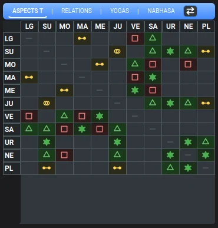


Avastha — The Avastha panel shows the Lajjitaadi Avastha calculations for
the current chart. Each cell shows how much one planet helps (+) or harms
(-) another, with ~ for a neutral relationship and
± where a planet does both. Read a column to see everything being done to that
planet.
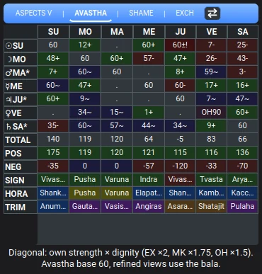
Under the seven-by-seven matrix there are six summary rows:
TOTAL = POS + NEG. This matters because two planets can share a total of
zero and be in completely different situations: one untouched by anything, the other
pulled hard in both directions at once. The split is what tells them apart.Click a SIGN, HORA or TRIMSAMSA cell to open that being's full description: its theme, and what it looks like healthy and afflicted. This is the same description you reach by clicking a sector on the wheel, brought to where you are already reading the numbers.
The diagonal is the planet's own strength. Reading from the top-left corner downwards, each cell is where a planet meets itself, and it holds that planet's own base strength multiplied by its dignity. Dignity is how comfortable a planet is in the sign it landed in, and the three good ones multiply:
×2×1.75×1.5A planet with none of these keeps its plain strength. The legend printed under the table repeats the three multipliers (visible at the bottom of the screenshot above), so you never have to hold them in your head.
Refining by strength: click the tab again. The Avastha tab button is not only a tab. Once the panel is showing, each further click advances it through five views, and the button relabels itself so you always know which one you are looking at:
Avastha → Duc → Dig → Uccha → Chesta → back to Avastha.
The plain Avastha view is the classical one: an influence counts at its face value. Jupiter helping Mercury contributes the same amount whether Jupiter is thriving or barely holding on.
The four refined views change that. They weigh every influence by how strong the planet doing it happens to be. "Strength" is not one number in this tradition but several, measured in different ways, and each refined view uses a different one:
These are the same balas ("bala" simply means strength) the Strength panel shows, so you can look up any number you see here.
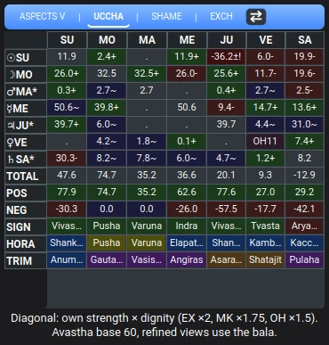
The same chart in the Uccha view. Notice the tab button now reads "Uccha" rather than "Avastha". Every number in the matrix has been rescaled by the influencing planet's Uccha bala, so the totals move too.
Two things behave differently in the refined views. Neutral influences are still shown in
the matrix and contribute zero to the totals, and a cell that both gives and takes shows its
net figure
with a ± sign. Hover such a cell to see the give and take separately.
Shame (Lajjita Avastha) — Shows which planets are in a state of shame. The panel lists each shamed planet with its sign, house, the source of shame, and a summary count at the bottom. Shame occurs in two specific situations:

For example, Mars and Moon in the 5th house causes the Moon to feel shame — practically meaning a deep wound connected to the inner feminine child (Moon period, age 0-1).
There are also avasthas of pride, which occur when a planet is in its sign of exaltation — the opposite of shame, giving inner confidence.
Exchange Yogas (Parivartana) — Shows exchange yogas between planets. An exchange occurs when two planets are in each other's signs (e.g., Mars in Cancer and Moon in Aries). Click the yoga name for a full explanation. Three types are detected:

Each exchange is shown with a description of its effects and the houses involved. Click the yoga name for a detailed popup explaining the yoga's full meaning, how the 3rd house "exam" works, and how it manifests with healthy or unhealthy avasthas. The fullscreen zoom (double-click) provides expanded descriptions.

The panel now shows more than exchanges. Above the exchange list sit two further sections, because an exchange is only one of the ways a chart's rulership can loop back on itself.
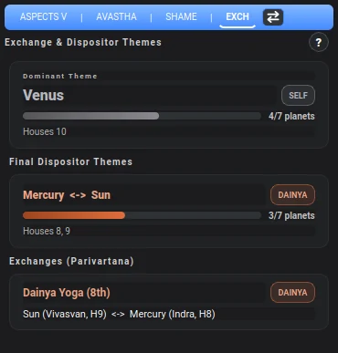
SELF: it disposes itself, and
the chain stops there.<-> is a loop: those two planets sit in each other's signs and hand
the chain back and forth forever.MAHA, KHALA or DAINYA.Reading these together is what makes them useful. An exchange tells you two planets are entangled. The final dispositor tells you where the whole chart drains to. When the two point at the same place, that theme is doing a great deal of work in the person's life.
The ? button in the panel header opens the one tutorial this panel has. It explains what exchanges and final dispositors are, and then goes through the house-type groupings the cards rely on: easy houses, effort houses (2, 3, 11), dusthanas (6, 8, 12), hidden houses (4, 8, 12), and the angle / succedent / cadent timing distinction. It also names its sources rather than asserting the doctrine: Mantreswara's Phaladeepika chapter 1 for the Kendra, Trikona and Upachaya definitions, the Brihat Parashara Hora Shastra and Saravali for the same doctrine, and, for the Greek origin of the words kendra, panaphara and apoklima, David Pingree's work on the Yavanajataka. Worth reading once even if you never use the panel again.
The Nabhasa tab sits at the right-hand end of the Tajika tab row. It is not a Tajika technique: it landed on that row purely because that row had room for a fourth button. Swap to Tajika mode with the swap icon and the tab appears.
Where every other panel reads individual planets, Nabhasa reads the shape of the whole chart. It ignores what each planet is doing and asks one question instead: how are the seven classical planets spread across the twelve houses? Then it names the pattern they make. A chart with everything crammed into two or three neighbouring houses is a fundamentally different life from one with the planets spaced evenly all the way round, and that difference is what these yogas describe.
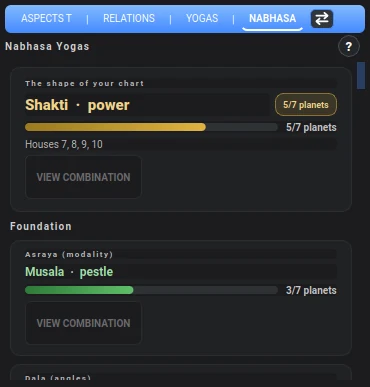
The panel is a stack of cards in four groups. The Sanskrit names look forbidding, so here is what each family actually asks:
Nothing here is hidden because it did not form. Every Akriti is listed with a bar showing how close it came, rather than only the ones that qualify. A chart that misses a yoga by one planet is telling you something a pass/fail list would throw away, and you are the one who decides whether "5 of 7 planets" is close enough to matter.
View Combination — each Akriti card carries a VIEW COMBINATION button. It opens a small movable window drawing that yoga's defining house pattern in both North Indian and South Indian styles. The window is not modal: drag it next to your own chart and compare the two grids side by side, which is far easier than holding the pattern in your head.
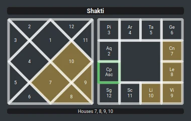
The Ardha Chandra pattern. The same seven houses are shaded in both grid styles, with the list repeated underneath. Whichever grid you think in, one of these two is the one you can read at a glance.
Double-click the Aspects panel to open a 7-page fullscreen view with paged navigation. The zoom version shows all data at full screen width.
Page 1: Aspects — The Vedic aspect grid at full size with color-coded cells.
Values are virupas (max 60). Y means Yuti (same sign conjunction). The legend
at the bottom explains: values 45+ are strong, 30+ are moderate.

Page 2: Avastha — Full avastha matrix at full width.
Page 3: Shame — Expanded shame panel with full descriptions.
Page 4: Tajika Aspects — The Tajika matrix at full size with all planets including outer planets (Uranus, Neptune, Pluto) and the Ascendant (LG). Color-coded symbols show aspect types: a star for the sextile, a triangle for the trine, a square for the square, and the conjunction and opposition glyphs for those two.

Page 5: Tajika Relations — Full list of every aspect pair, grouped by relationship quality (Openly Friendly, Secretly Friendly, Neutral, Secretly Inimical, Openly Inimical). Each row shows the pair, aspect type, Virupas Rating (VR), and exact orb. Sorted by strength within each group.

Page 6: Tajika Yogas — Full Tajika yoga analysis at screen width.
Page 7: Exchange Yogas — Expanded exchange yoga descriptions.
Dashas are planetary timing systems — they tell you which planet is "ruling" a given period of your life. Western astrology has similar concepts in planetary periods (Firdaria) and annual profections, but the Vedic dasha systems are far more detailed and precise, with nested sub-periods down to minutes.
The left side of the window contains two dasha panels side by side:
Each dasha panel can use a different ayanamsa, letting you compare two ayanamsa systems side by side on the same chart. Both panels have the same Karaka/Cusp/House highlight filters at the bottom.
The primary timing system used in Vedic astrology, and one of its most powerful tools. It divides life into planetary periods based on the Moon's nakshatra (lunar mansion) at birth. Varuna360 supports 5 nested levels:
Click any period to expand and see its sub-periods. Each entry shows the planet, the exact start date, and the age at that time. The currently active period is marked with ▶. The numbered buttons (1-5) at the top select the dasha level depth.


Left: Level 1 (mahadashas). Right: Level 2 (antardasha sub-periods within Rahu).
120-Year Cycles: Use the < / >
buttons to navigate through 120-year cycle windows.
The ayanamsa is the offset angle between the tropical and sidereal zodiacs, caused by the precession of the equinoxes. Western astrologers may not be familiar with this concept since it only matters when calculating sidereal-based features like nakshatras and dashas. The ayanamsa determines which nakshatra the Moon falls in, which in turn determines the starting point of the Vimshottari dasha sequence.
There are two ways to change the ayanamsa:


Fifty ayanamsa systems are available, in six categories:
A natural timing system based on planetary maturation ages. Press F7 to switch the right dasha panel between Vimshottari and Planetary Ages mode.
The panel shows two sections in a single view:

At the bottom of each dasha panel, three dropdown filters let you highlight specific periods in the dasha list:
This is a powerful tool for timing events. Instead of manually scanning through dasha periods trying to find when a specific planet is active, you select the relevant karaka or house lord and the matching periods light up instantly. For example, to find when career themes are strongest, select "10th" in the Cusp filter and all periods ruled by the 10th house lord are highlighted.


Left: Planetary Ages with AK + 10th cusp highlighted. Right: Vimshottari with the same filters.
The left dasha panel defaults to Vedanga Jyotisha ayanamsa, which is the current default for the Aditya Zodiac system. This is still an active area of research — it replaced the previous default setting (Dhruva GC mid-Mula) as we continue testing which ayanamsa produces the most accurate dasha timing for the Tropical Vedic approach. You can change the left panel's ayanamsa independently from the right panel via the title bar dropdown or in Settings. Both panels support the same 5-level dasha expansion and Karaka/Cusp/House highlight filters.
The chart memory system works like browser tab profiles (similar to Chrome profiles). Each profile maintains its own collection of loaded charts, session state, and preferences. All charts are automatically saved when you close the application and restored on restart. You never need to manually save your chart collection.
The memory panel sits at the top of the chart area. It displays your loaded charts as clickable buttons arranged in 2 rows × 20 columns (40 charts per page).

There are several ways to load charts into the memory panel:
If you have never used CHTK files before, you can also save charts you create in Varuna360 as CHTK files (File > Save Chart As) and reload them later or share them with other users.

Right-click any chart button in the memory panel for a context menu:
Charts you return to often do not want to be hunted for. Right-click a chart button and choose ☆ Add to Favorites. Right-click it again to take it back out: the menu entry flips to ★ Remove from Favorites, so the star tells you which state you are in before you click.
Two things make this more than a bookmark:
favorites.json inside your chart database folder, and paths inside that
folder are stored relative to it. So the whole folder can be moved to another machine, or
synced, and your favorites survive the trip.Transit charts cannot be favorited, since they describe a moment rather than a person.
Profiles let you organize charts into separate collections. Each profile has its own charts, session state, and avatar. This is useful for separating work by context (e.g., clients, research, family, students).
The profile avatar is the round button at the top-right corner of the window. Click it to open the profile menu.

There is no limit on the number of profiles you can create. Each profile stores its charts independently. Within each profile, you can have multiple pages of charts (40 per page), so a single profile can hold hundreds of charts.
The Edit Chart tab (Ctrl+E) has three sub-tabs accessible from the left sidebar: Edit Info, New Chart, and Map View.
A form-based editor for the currently loaded chart. The form is split into sections:
Top section: Full Name, Date (MM/DD/YYYY), Time Format (Local Time or UTC Time), Local Time (HH:MM:SS), and Gender (Male/Female).

Bottom section: Birth Location (city search with auto-completion), Coordinates (Latitude/Longitude, editable directly or via the USE MAP button), Timezone (IANA name with numeric offset, e.g. +04:00), and Daylight Saving Time (No / Yes / War Time).

Click SEARCH OR PICK ON MAP to switch to the Map View and select the location visually. Click SAVE CHANGES when done, or CANCEL to discard.
Create a brand new chart from scratch. Uses the same form as Edit Info but starts with empty fields. Fill in the birth data and submit to calculate the chart and add it to memory. The + Add Chart button in the toolbar is often faster for quick entry since it accepts copy-pasted text.
An interactive offline map for choosing birth locations. Type a city, country or address in the search bar and press SEARCH, or click straight on the map to drop a pin. The coordinates and the timezone are worked out for you.

Map View: search for a city or click on the map. Click APPLY & RETURN TO EDIT INFO to use the selected coordinates.
The map ships with the program, so it works with no internet connection. Scrolling zooms in, and there is a point where the detail stops: that is the edge of what is stored on your computer. Pause and scroll again and it will fetch sharper tiles online if it can. A card in the corner reports the point you have selected, its coordinates and its timezone.
Click APPLY & RETURN TO EDIT INFO at the bottom right to apply the location and go back to the form with the coordinates filled in.
Seeing where each sign rises
The Ascendant button in the search bar turns the map into an astrological instrument. The Ascendant is the sign climbing over the eastern horizon at the moment of birth, and it depends on where on Earth you were as much as on when. Press the button and the world is painted with curved bands, each one covering the places where a particular sign is rising, tinted by that sign's element and labelled across the band.
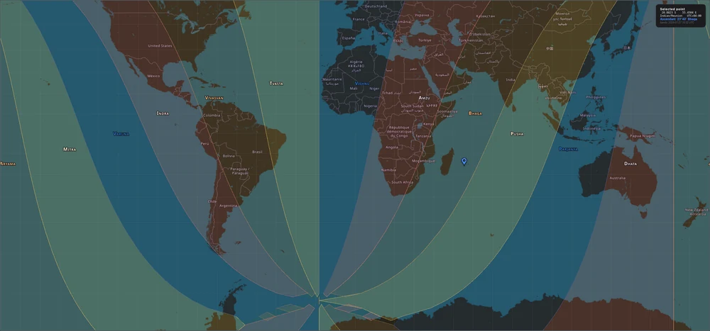
The Ascendant preview. The card at the top right gives the point's coordinates, its own timezone, and the Ascendant there.
This answers a question that is otherwise tedious: where on Earth would this person have had a different rising sign? Move the pointer and the card updates, so you can see how far you would have to move for the Ascendant to change, and how narrow the band is where you actually were.
The button only appears once the map has a moment to work from, so you will see it when the map is opened for a chart rather than in isolation.
Toggle with the Human Design button in the toolbar, or View > Toggle Human Design.
This feature calculates the astrological chart at 88° before the natal Sun position, as described by the creator of Human Design. It produces the "Design" or "unconscious" chart that shows pre-birth planetary influences.
Why it may be worth reading whatever you make of Human Design. The Sun moves about a degree a day, so 88 degrees back is roughly 88 days: this is the sky about three months before you were born. The period before birth shapes you. Read on those terms the chart is not a Human Design artefact at all, it is simply a chart of the sky while you were forming, and that stands on its own whether or not the system built on top of it holds up.
Two directions worth exploring. Both are already possible with Birth Time ± (Alt+T), which shifts a chart by anything from a second to years:
When Human Design mode is active, the Human Design button turns green. The mode automatically deactivates when you load a new chart, reload the current chart, or load a "Now" chart.
The main toolbar sits between the chart memory panel and the chart display. Here is each button from left to right:

Wheel / South / North (F2) — Shows the current chart view style. Click to cycle through all five views: South Indian, Wheel, North Indian, Body Graph, Cards of Truth.
Open in Kala (Alt+K) — Opens the current chart in Kala software (Ernst Wilhelm's astrology program). Requires Kala to be installed and configured in Settings.
📖 Chart Info — Opens a panel with the chart's own details (Rodden rating, tags, the format it came from, your notes) and a Search Wikipedia button that fetches a biography on demand. The biography search biographical databases and works best with known celebrities or public figures. If the person is not publicly known, it will not return useful results.
Chart name pill — The rounded blue bar showing the person's name and current age (e.g., "Ali Larter 50y 3m"). Right-click this pill to open a research menu with multiple search and dasha timing options:

Astrology searches:
Biography searches:
Dasha Event Search — The right-click menu includes dynamic submenus based on the current dasha system selected in the left panel. The label reflects your current ayanamsa setting (e.g., Dhruva GC mid-Mula, Lahiri, Vedanga Jyotisha). Click a dasha period in the left panel first to select it (it highlights in blue). The highlighted period is the one used for the search.
Two search methods are available for each antardasha sub-period:
| Submenu | What it does |
|---|---|
| [Ayanamsa] — Google Search | Opens Google with the person's name and a date range filter matching the sub-period. Google only returns results published or dated within that period — great for finding news articles, interviews, and events. |
| [Ayanamsa] — Copy AI Prompt | Copies a natural-language prompt to your clipboard, ready to paste into any AI assistant (Claude, ChatGPT, Gemini, Perplexity, etc.). The prompt asks: “What significant events happened to [Name] between [Month Year] and [Month Year]?” |
Each entry shows the antardasha sub-period (e.g., “Ra/Ju (01/18/2004 - 03/22/2006)”). The currently active sub-period is marked with ▸.

Jupiter mahadasha selected in the dasha panel (blue highlight). The right-click submenu shows each antardasha sub-period with date ranges.

Clicking a different dasha (Mars) changes which sub-periods appear in the search menu.
The Google Search option automatically sets a Custom date range matching the dasha period. This is not immediately visible in Google's results page: you need to click Tools and hover over the date filter to see "Custom range..." with a checkmark, confirming the search is already filtered to that period.

Google Tools showing the custom date range automatically set by the dasha search.
Why antardasha? Antardasha sub-periods (the second level of the Vimshottari system) typically last 1-3 years — long enough to correlate with life events, but specific enough to pinpoint timing. Mahadasha periods (14-20 years) are too broad for event research.
Planetary Ages & Maturation — When the right panel is in Nisarga mode (F7), the right-click menu adds four submenus:
| Submenu | What it shows |
|---|---|
| Planetary Ages — Google Search | Each planet rules a period of life (Moon 0-1y, Mars 1-3y, Mercury 3-12y, Venus 12-32y, Jupiter 32-50y, Sun 50-70y, Saturn 70-120y). Searches Google with a date range matching that period. |
| Planetary Ages — Copy AI Prompt | Copies a clipboard prompt for the selected planetary age period. |
| Maturation Ages — Google Search | Each planet matures at a specific age (Jupiter at 16y, Sun at 21y, Moon at 24y). These are milestone years where the planet's themes crystallize. Searches Google for events during the maturation window. |
| Maturation Ages — Copy AI Prompt | Copies a clipboard prompt for the selected maturation period. |
Maturation entries are marked with ★ in the menu. The currently active period is marked with ▸.
Transit from Dasha — The dasha right-click menu also includes two transit actions that use the start date of the selected dasha period:

Right-click a dasha period to open the context menu. "Show as transit overlay" activates the transit overlay set to that dasha's start date, visible in the Wheel, South Indian and North Indian views.
Close button (red X) — Removes the current chart from memory.
NOW (Alt+N) — Creates a transit chart for the current moment at your location. Useful for quick transit checks: what planets are active right now? You can combine this with the Birth Time button to move forward or backward in time. Press F3 to toggle the transit overlay, which shows transit planets directly on the natal chart in the three grid and wheel views (Wheel rim, South Indian center box, North Indian inner diamond).
+ Add Chart — Quick chart entry dialog. This is the fastest way to create a chart: just copy and paste the birth information (name, date, time, location) as a single line of text, and the built-in parser will automatically extract and separate the fields. Much faster than filling out the full Edit Chart form. Always verify that the parsed information is correct before generating the chart, as the parser does not always get it right (especially with unusual date formats or uncommon city names).

Birth Time (Alt+T) — Opens a time adjustment widget that lets you shift the birth time by seconds, minutes, or hours. Useful for birth time rectification (testing slightly different times to see how the chart changes), or for moving through time on a transit chart created with the NOW button.

Human Design — Toggles Human Design mode. When active (green), the chart shows the "Design" chart calculated at 88 degrees before the natal Sun. See the Human Design section for details. This is an experimental feature.
Aditya Circle / Tropical Classic — Zodiac mode buttons. See the Zodiac Modes section for all 6 options.
| Button | Shortcut | Description |
|---|---|---|
| Transit Overlay | F3 | Toggle transit overlay on current chart view (Wheel, South Indian, North Indian) |
| Retinue Rings | F5 | Toggle colored house rings showing planetary retinues |
| Pie Charts | Shift+F5 | Toggle element and modality pie charts on the wheel |
| Outer Planets | F8 | Toggle visibility of Uranus, Neptune, and Pluto |
| Cusp Lines | F9 | Cycle cusp lines: Off → Angles only (ASC, IC, DESC, MC) → all 12 cusps |
| Ascendant Cycle | F4 | Cycle through 12 signs as ascendant (planets stay fixed, houses rotate) |
Vargas are divisional charts — they divide each sign into smaller segments to zoom into specific life areas. Western astrology uses a similar concept with harmonic charts (the D9/Navamsa is equivalent to the 9th harmonic). If you are a Western astrologer, think of vargas as harmonics with specific traditional meanings attached.
Access via View > Varga Charts in the menu, or use the varga sidebar on the left edge of the chart area. The sidebar shows numbered buttons for quick switching between divisional charts.

The varga sidebar: click any button to switch divisional chart. D1 (Rasi) is the main chart.
| Varga | Name | Signification |
|---|---|---|
| D1 | Rasi | Main chart — overall life |
| D2 | Hora | Wealth and resources |
| D3 | Drekkana | Siblings, courage, initiative |
| D4 | Chaturthamsa | Property, vehicles, fixed assets |
| D7 | Saptamsa | Children, progeny |
| D9 | Navamsa | Spouse, dharma, spiritual path |
| D10 | Dasamsa | Career, profession, public status |
| D12 | Dwadasamsa | Parents, ancestry |
| D16 | Shodasamsa | Vehicles, comforts, pleasures |
| D20 | Vimsamsa | Spiritual practices, upasana |
| D24 | Chaturvimsamsa | Education, learning, intelligence |
| D27 | Saptavimsamsa | Strengths and weaknesses |
| D30 | Trimsamsa | Misfortunes, ethics |
| D40 | Khavedamsa | Auspicious and inauspicious effects |
| D45 | Akshavedamsa | General well-being, moral character |
| D60 | Shashtiamsa | Past life karma, finest division |
The sidebar also includes D10R and D24R. These are the same two divisions counted in the other direction for even signs. Which direction is "standard" is not settled between authorities, which is why both are offered rather than one being chosen for you. Note that the R is a label for the alternative, not for a particular school: in D24 the R option is the Parashara counting.
Press Ctrl+P or go to View > Planet Placements to open a comprehensive data table showing all planetary positions in one view. This dialog includes:
The table has five columns and no others: Planet, Sign, Nakshatra, Position and Absolute. There is no pada column, no per-planet dasha lord, and no retrograde marker here. A single Vimshottari Dasha (current) block sits below the table.
The ayanamsa named under the table is the left dasha panel's ayanamsa, while the Nakshatra column is computed from the chart's own ayanamsa. Both are Vedanga Jyotisha out of the box so they agree; if you change only the left dasha ayanamsa, the label will name a frame the Nakshatra column did not use.
The Cards of Truth system maps each planet to a playing card based on the birth date. This is a cross-disciplinary system that combines astrology with the traditional 52-card deck, where each card carries symbolic meaning linked to planetary energies. The table shows each planet's position (Base, Sun, Moon, Mars, Mercury, Jupiter, Venus, Saturn, Rahu, Ketu), the corresponding card (e.g., J♠, 8♣, T♥), and which planets share the same card energy.

Click COPY TO CLIPBOARD to copy the card data for use with AI tools or personal reference.
There are two ways to search for charts: the Find Chart tab (full-featured search across all your CHTK files on disk) and the Search popup (quick search across charts loaded in memory).
The Find Chart tab is a powerful chart database browser. It indexes all CHTK files in your configured folders and lets you filter by name, planetary position, and retinue being. The tab shows a results table with columns for Name, ASC, Sun, Moon, City, Country, Birth date, Modified date, and file Path.

Click the Folder Paths header to expand the folder configuration. You can set up to 3 folders to index. The default folder is your Kala charts directory. The chart count shows how many charts are currently indexed (loaded from cache for speed).

Click REBUILD INDEX to re-scan all folders and rebuild the search cache. This is useful after adding new CHTK files to your folders.
Click the Filter by Planetary Position header to expand. Each planet (Asc, Sun, Moon, Mars, Mercury, Jupiter, Venus, Saturn, Rahu, Ketu, plus outer planets) has a dropdown where you can select a specific sign. Only charts matching ALL selected filters are shown. The sign names respect your current zodiac mode (Aditya names in Aditya mode, Western names in Tropical Classic).
Filter by Retinue Being is a second filter row where you can search by which retinue being (Rishi, Gandharva, Apsara, Naga, Yaksha, Rakshasa) each planet activates. This is unique to the Aditya system.

Click CLEAR ALL FILTERS (red button) to reset all dropdowns back to (Any).
Type a name, city, or country in the Search field. Results update live as you type. Use the Sort by dropdown (name, birth date, modified date) and Group by dropdown (none, country, path) to organize results. The chart count updates to show how many charts match your current filters.
Click any result row to load that chart immediately. Double-click to load and switch to the Chart tab.
When your search returns no local results, a SEARCH WEB button appears at the bottom of the results area. Clicking it opens a web search for birth data matching the name you typed. This lets you quickly look up birth data for people not yet in your chart collection.

The SEARCH WEB button is also available at the top right of the search bar, letting you search the web at any time (even when local results are shown).
Click the 🔍 Search button in the memory panel to open a quick search popup. This searches across all charts loaded in memory across all profiles, not the CHTK files on disk.

Typing "lor" matches 4 charts across all profiles. Each result shows the profile name in brackets.
Double-click a result or press Enter to load that chart immediately. The popup shows which profile each chart belongs to (e.g., [Default], [Main]).
When the popup finds no results for your search, a SEARCH IN FIND CHART TAB button appears. Clicking it closes the popup and opens the Find Chart tab with your search query pre-filled, so you can search the full CHTK database on disk instead of just memory.

No memory results for "Chelsea Jordan". Click SEARCH IN FIND CHART TAB to search the full disk database.
The Settings tab has 6 sub-tabs accessible from the left sidebar: Appearance, Display Scale, Font Sizes, Chart Display, Zodiac & Calculation, and Default Folders. Most settings persist across restarts, but not all of them save the moment you touch them: some pages need their Apply or Save Settings button. Where that matters it is noted below.
Padlocks are the answer to “why does this keep changing on me?”. Profiles carry their own zodiac mode and dasha ayanamsas, so switching profile normally switches those too. Pin them and it stops.
Select the application color theme. Varuna360 offers 19 color themes:

Changes apply immediately. The South Indian chart background automatically switches between a light stone texture (light themes) and a dark stone texture (dark themes). Each theme card shows a preview swatch of its three accent colors.
Other Settings at the bottom of this tab:
Adjust the overall UI scaling for your screen resolution. This affects panels, buttons, and text across the entire application. The chart wheel has its own independent zoom (mouse scroll).

Fine-tune the font size for each UI area independently. The All Areas spinner at the top sets a base size that applies everywhere. Below it, each area has its own spinner with a description and live preview showing sample text at the current size.

Three resolution presets sit under the All Areas spinner: HD, FULL HD
and 2K. Each sets every area at once to sizes chosen for that screen. Use one as a
starting point, then adjust individual areas from there. If the areas do not all share one
value, the All Areas spinner shows -- rather than pretending they do.
The ten areas are:
These sizes are multiplied by the Display Scale, so the two settings do different jobs: change the Display Scale when the whole interface is the wrong size for your screen, and change these when you want one area emphasised relative to the others. Reset All returns every area to its default.
Controls what is visible on the chart and which sub-tabs open by default.

Default sub-tabs (Chart tab) — Choose which sub-tab each panel opens on at launch. The padlock beside each panel is the control: locked, that panel always starts on the tab you picked; unlocked, it reopens on whichever tab you last used. Lock the ones you always want in the same place and leave the rest to follow you around.
The most important settings tab. Controls the zodiac system, ayanamsa for each dasha panel, house system, and Cards of Truth display.

Experience level — Beginner (default) shows only the 3 main zodiac systems. Advanced unlocks all 6 zodiac options including alternative naming. See Zodiac Modes for details.
Zodiac System & Sign Naming
Ayanamsa — The angular difference between the Tropical and Sidereal zodiacs. 50 systems are available, in six groups: Custom Equatorial, Standard Sidereal, Galactic, Historical, Revati-based, and Modern / Specialized. The default is Vedanga Jyotisha.
Dasha Ayanamshas — Each dasha panel can use its own ayanamsa independently. The right panel only uses an ayanamsa in Vimshottari mode; Planetary Ages uses fixed natural periods.
House System
Cards of Truth
Define default folders for chart loading and searching. When you use Load Folder or open CHTK files, the app starts in these folders.

Kala Software
Click SAVE SETTINGS at the bottom right to apply folder changes.
These save themselves the moment you change them, with no button to press:
These do not. The Display Scale page, the Font Sizes page, the Chart Display page, the Nakshatra Compatibility box and the Default Folders page all need their own Apply or Save Settings button. Close the Settings tab without pressing it and your change is gone.
These are the questions that actually come up, with short answers. If yours is not here, the 📦 Answer my question with AI button at the top of this window will let you ask an assistant instead. See Ask an AI About This Manual.
I clicked a planet and nothing happened.
Use a double-click. A single click on a chart starts dragging it, so nothing opens.
This is true of every planet, sign and sector, in every view that has them. It is the most
common thing
people get stuck on.
Half my panels and several toolbar buttons have disappeared.
Your window is narrower than 1400 pixels, so the program switched to its compact
layout. The side panels are still there, hidden behind two thin arrow buttons at the left and
right edges of the chart area. Click one and that group slides back in, though opening one
closes the other. Compact mode also hides Open in Kala, 📖 Chart Info,
Birth Time ±, Human Design, ⧐ Transit and
+ Tropical. Widen the window past 1400 pixels and everything comes back for good.
I pressed F5 (or F6, F9, Shift+F5,
Shift+F2) and nothing changed.
Those options belong to a particular view. Retinue rings, element pies, trimsamsa degrees and
cusp lines are Wheel only; the rashi aspect panel is Body Graph only. The
program does tell you, in the status bar, with a message like
Retinue rings only available on Wheel view (F2 to switch). Press F2 to get
to the right view first.
Where does the program tell me things?
The status bar, the thin strip along the very bottom of the window. Almost every toggle
confirms itself there for a few seconds, including which mode you just switched into and why
a key did nothing. It is easy to miss because it is quiet and it clears itself.
A tab is empty and says “Click to load…”.
Find Chart, Edit Chart and Settings are built the first time you open them, so the program
starts faster. Click the tab again. Settings can take several seconds the first time.
Can I zoom with the keyboard?
Yes. Click the chart once so it has focus, then + or = to zoom in,
- to zoom out, 0 to fit the chart back in the window. The mouse wheel
does the same thing. This works in all five views.
Is there a quick way to look something up on the web?
Two, and neither is obvious. Select any text anywhere in the program, right-click it,
and the menu offers Search Google for whatever you highlighted. Separately,
left-click the chart name at the top to open Google Images for that person, or
right-click it to search Astrotheme.
Can I open a chart by double-clicking it in my file manager?
Yes. The program accepts a file path when it starts, which is what makes “Open
with” work. You can also drag a .chtk or .toml file onto the
window, but only onto the Chart tab. Dropping it on Find Chart, Edit Chart or Settings
does nothing.
I made a chart with Now and it will not save.
Sometimes, and it depends on what you were looking at first. Save Chart As compares the
chart on screen against the birth moment it has on record, and refuses if the two differ.
Pressing Now does not update that record, so the outcome is inconsistent: with a birth
chart already open you get Cannot save a transit/Now chart as CHTK, while the same Now
chart on a freshly started program, with nothing loaded yet, saves without complaint. The
message names CHTK, but the refusal happens before you choose a format, so
.toml is blocked too.
The same check also blocks any chart you have nudged with Birth Time ±, which means rectification work cannot be saved out. Either way the chart is not lost: it stays in your chart bar and survives a restart. To get a file now, re-create the moment with + Add Chart.
Where does Now get my location?
From your internet connection, by asking a geolocation service what city your IP address is
in. Two things follow. It is a network request, so Now does not work the same way
offline. And if the lookup fails or you are on a VPN, the program falls back to
latitude 0, longitude 0, a point in the sea off West Africa, and says so only in a
console you cannot see. If a Now chart looks wrong, check that first.
I pointed the program at a folder and nothing appeared.
Folder loading does not look inside sub-folders. Only charts sitting directly in the folder
you chose are found. If there are a lot, you will be asked to confirm before they load.
If I remove a chart from the memory bar, have I deleted the file?
No. Clear All and Delete Selected only empty the bar at the top of the window.
Your .chtk and .toml files are untouched. The confirmation says
“this cannot be undone”, which is true of the list and not of your files.
I deleted a chart from the search results. Is it gone?
No. It was moved to a trash folder inside your chart database folder. You can
fetch it back from there.
The same person appears twice in my chart bar.
The program treats two charts as the same one when the name matches, the date matches, and
the birth times are within about 7 seconds of each other. Correct someone's birth time
by more than that and you get a second button rather than an updated one. The reverse also
happens: two different people with the same name and birth date within 7 seconds will merge
into a single entry.
How do I back up my work?
There is no backup command, so copy these yourself:
.chtk and .toml files in
whatever folders you keep them in. These are the irreplaceable part.favorites.json, in your default chart folder.profiles folder, which holds each profile's chart list.app_settings.json, which holds every preference.Where are my settings and profiles actually stored?
In the data folder you chose the first time you ran the program. If you run from source it is
the project folder. The pointer to it lives at
%USERPROFILE%\.varuna360\bootstrap.json on Windows,
~/Library/Application Support/varuna360/bootstrap.json on Mac, and
$XDG_CONFIG_HOME/varuna360/bootstrap.json on Linux. Delete that pointer file and
the program asks you to choose a folder again the next time it starts. There is no setting
inside the program that moves it.
Find Chart says there is no index.
It never builds one on its own. Add your folders, then press
REBUILD INDEX. Do the same after adding a lot of new charts.
My Moon is in a different sign than in my other program.
Almost always the zodiac mode. Varuna360 starts in Aditya Circle, whose divisions begin
30 degrees earlier than the Western signs you may be used to. Press Alt+C for
Tropical Classic and compare again. See Zodiac Modes.
My Rahu and Ketu are about a degree off.
This program uses the true node, the node's actual wobbling position. Most Jyotish
software uses the mean node, a smoothed average. They differ by up to about 1 degree
40 minutes, which is enough to change the nakshatra and occasionally the sign. Neither is
wrong; they are two different conventions and there is no setting to switch.
My dasha dates are a few days off.
Vimshottari periods here are measured in Saura years of 365.2422 days, the tropical
year. Software using 365.25, or a 360-day year, will drift steadily away from these dates,
by up to a few weeks across a full 120-year cycle.
A chart from the 1800s is completely different in another program.
Expect that, and treat the older chart as the less certain one. Time zones and daylight
saving are far messier historically than they look: before standard time each town kept its
own clock, rules changed locally and often, wartime exceptions came and went, and a great
deal of it was recorded on paper if it was recorded at all. Every program works from the same
incomplete historical database and fills the gaps slightly differently, so two of them will
disagree on the same old birth and neither is simply wrong.
The rule of thumb is blunt: the older the date, the less reliable the offset. This is a limit of what survives in the record rather than a limit of any one piece of software, and even the best of them will be missing a few periods somewhere in the world. When a pre-standardisation chart matters, verify the time against its original source rather than trusting any program to have resolved it for you.
The left and right dasha panels disagree about my current period.
They are meant to be two different calculations, so you can compare. The left panel uses
Vedanga Jyotisha. The right panel starts in Planetary Ages, and if you press
F7 into Vimshottari it uses Dhruva GC mid-Mula. Those two frames are far
enough apart that the Moon can land in a different nakshatra, which means a different starting
lord and an entirely different sequence, not a small shift in dates.
I switched to Sidereal and the Strength panel did not change.
Correct. Strength is always computed in the tropical frame, so a Sidereal chart's Strength
figures are identical to Tropical Classic. Sidereal changes where the sign boundaries fall,
not the exaltation degrees these calculations use.
I changed the house system and the Strength numbers moved.
Expected. Digbala, directional strength, is measured against the house cusps, so it
follows whichever house system you have set. The other columns do not.
Is this full Shadbala?
No, and the manual would rather say so. Three of the six classical components are computed:
Digbala, Uccha and Chesta. The fourth column, DUC, is simply the
average of those three. Saptavargaja, kendradi, drekkana, ayana and drig are not implemented.
My whole chart is exactly one hour out.
Usually daylight saving in the source file. Note also that the CHTK format stores time zones
with the sign reversed from the usual convention: -01:00:00 in the file
means UTC+1. Varuna360 flips it back on reading, but anyone hand-editing a CHTK in a text
editor should know.
Is switching between Aditya Circle and Tropical Classic just a change of names?
No, and this is worth understanding properly. Only the alternative naming options
(the second three in Advanced mode) are purely cosmetic. Switching between the systems
themselves moves every division by 30 degrees, and a great deal is attached to the division
rather than to the sky:
Can I use the program in French, or any other language?
Not yet. The interface is English only, and there is no translation system in it. The
Language setting does something much narrower: it translates zodiac sign names
and planet names into one of nine languages. Two catches. Sign names are only
translated when you are using Western sign names, so in the default Aditya Circle mode the
setting appears to do nothing at all. And planet names only appear when
planet labels are set to show names (F11).
I changed a setting and it went back on its own.
Three possibilities, in order of likelihood. A padlock is pinning it, which is exactly
what padlocks are for. Or you changed it with a keyboard shortcut and later pressed
Apply on the Chart Display page, which writes back the values that page read when it
was first opened. Or you switched profile: each profile remembers its own zodiac mode
and dasha ayanamsas, and switching brings that profile's versions with it. Pin the setting to
stop the last one.
I keep two windows of the program open.
Then expect exactly this. Both windows save the whole settings file and the whole chart list,
so whichever saves last wins and the other window's changes vanish. Change settings in one
window at a time.
I unchecked “Auto-restore session” and my saved charts are gone.
This is the most destructive setting in the program, and it does not warn you. With
auto-restore off, the program starts with an empty chart bar, but it still saves that empty
bar over your stored collection about half a minute later, and over the backup copy half a
minute after that. If you have just done this and the program is still open, do not close
it: turn the setting back on and restart before the next save. If you want a clean start
each time, use a separate profile instead; that is what profiles are for and it
destroys nothing.
Reset All on the Font Sizes page did nothing.
It moved the numbers but did not save them. Press Apply afterwards. The HD, Full HD
and 2K preset buttons on the same page are inconsistent with this: they save immediately.
The program will not reopen maximised.
On purpose. Saved window sizes that fill nearly the whole screen are ignored and replaced
with a slightly smaller window, and a saved position that would land the title bar off-screen
is also ignored. That second rule is what stops the window vanishing after you unplug a
second monitor.
The Help > About box shows version 1.0.
That number is wrong and hardcoded. The real version is in the file named VERSION
beside the program, and it is what the bug report tool sends.
Do I need an account to use this?
No. The desktop program works fully without signing in. The Account menu only attaches
a website tier if you want one.
I got a “Subscription Expired” popup. Is the program locked?
No. It keeps working exactly as before. The message concerns a website subscription, not the
program on your computer.
Is this really open source?
Yes, under the AGPL-3.0 licence, and that includes the paid Pro edition: Pro is a larger
edition, not a closed one. You can read every calculation the program makes. See
Modifying Varuna360 Yourself.
These are the messages the program can show you, what each one means, and what to do. If you are looking at a message that is not here, send it with the bug report described in the next section.
| Message | What it means and what to do |
|---|---|
| Geocoding Failed Could not find coordinates… Using (0, 0) / UTC as fallback. The chart will be inaccurate. |
The place name was not recognised, so the chart was cast for a point in the ocean. Do not keep it. Try a larger nearby city, a different spelling, or enter the latitude and longitude yourself. |
| No Time Found Defaulting to 12:00 (noon). |
No birth time was found in what you supplied. Noon is a reasonable placeholder for research on signs, but the Ascendant and the houses are meaningless until you set a real time. |
| Timezone Resolution Error | The program could not work out the offset, and deliberately did not build a chart rather than build a wrong one. Check the date, the place and the time zone. |
| Transit Chart Cannot save a transit/Now chart as CHTK. |
The chart is no longer at its birth moment. Save as .toml, or make a
real chart with + Add Chart. |
| Message | What it means and what to do |
|---|---|
| File Write Error In-memory chart updated, but the file could not be saved. |
Important: what you see on screen is now different from what is on disk. Your edit is not saved. Check the file is not read-only or open elsewhere, then save again. |
| Kala Not Found | Set the path to Kala in Settings > Default Folders. On Linux the program launches it through Wine. |
| Large folder / Very large folder | A confirmation before loading many charts at once. The second one defaults to No deliberately. |
| No .chtk or .toml files found in… | The folder has no charts directly inside it. Sub-folders are not searched. |
| Cannot use this folder | Shown at first run when the folder you picked cannot be created or written to. Choose somewhere inside your own user folder. |
These appear in a coloured banner rather than a popup, and they are the ones worth reading carefully, because they are about losing work rather than about one action failing.
| Banner | What it means and what to do |
|---|---|
| Your session did not save just now | One save failed. Usually transient. Watch it. |
| Your session is not being saved | Several saves in a row have failed. Your chart list is no longer being stored. Use Open Log Folder to see why, and do not rely on the program remembering anything until it clears. |
| Varuna360 could not use your chosen folder | The program has moved your session data somewhere it can write, so nothing is lost. This is the one state where a Choose Another Folder button appears. Picking a new folder needs a restart to take effect. |
| Some charts could not be saved | The only message here that means real loss. Some charts lacked the information needed to rebuild them and were dropped from the saved list, so they will not come back after a restart. Re-open those charts from their files. |
Only useful if you installed from source, but worth knowing:
Varuna360 /path/to/chart.chtk opens that chart on launch. This is what
makes “Open with” work from a file manager.-d or --debug adds a Debug tab with a restart button.-l or --lite forces the Lite edition.Three calculation tools can also be run directly from the source folder. The first two
take a --json option so their output can be fed to something else; the third
writes a chart file and has no JSON mode:
python -m AI_tools.analysis.AI_aspects <chart file>python -m AI_tools.AI_main_function.dignities_in_vargas <chart file>python -m AI_tools.AI_main_function.text_to_chtk "<birth details as text>"When something goes wrong, the useful thing to send is not a description of what you saw but the technical state the program was in. There is a button for that, in Settings > Default Folders, above the folder rows.
It is always available. You do not have to wait for something to break to use it, and you do not need to reproduce the fault first.
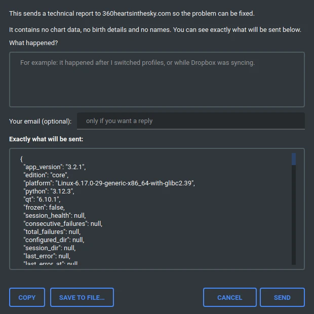
The dialog has three parts:
That third part is the point of the dialog. It is not a summary or an example of what might be sent: it is the actual text that leaves your machine, shown to you first. Scroll through it. It carries the app version, your operating system and Python and Qt versions, whether the app is running from a build or from source, and the recent save-health state.
It carries no chart data, no birth details and no names. Profile names are stripped, and file paths are reduced so your home directory does not travel with the report. If you find anything in the preview you would rather not send, do not send it: use Save to file instead and decide what to do with it afterwards.
Just above that button sits a banner that stays invisible while everything is fine, and appears only if the app has trouble saving your session. When it appears it tells you what failed and how often, and offers the same reporting button pre-filled with that state.
Saving happens in the background, so a failure used to be easy to miss until charts went missing. The banner exists so a save problem announces itself in the one place you would go looking, without interrupting your work with a dialog you have to dismiss over and over.
A manual is a good reference and a poor answering machine. If you have a specific question, you first have to guess which section holds the answer. There is a way around that: hand the whole manual to an AI assistant and ask it in your own words.
At the top of this window, on the right, there is a 📦 Answer my question with AI
button. It writes the entire manual, text and every screenshot, into a single .zip
file. Save it somewhere you can find it, the Desktop by default.
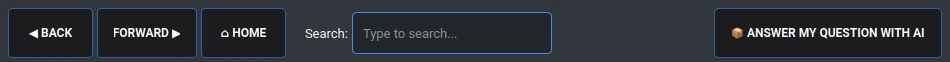
The manual's own toolbar. The button sits at the right-hand end. Hover it and a short explanation appears, so you never have to guess what it does.
Then open ChatGPT, Claude, or any other assistant that can read files, and drag the .zip straight into the chat. You do not need to unzip it: the assistant opens the archive itself and reads what is inside, screenshots included. Then ask your question. A prompt like this is enough:
I have attached the manual for an astrology program called Varuna360.
Read it, then answer my questions about how to use the program.
My question is: <your question>
Why bother, when you could just ask the AI directly? Because without the manual it answers from whatever it happens to remember about astrology software in general, and it will cheerfully describe buttons that do not exist. With the manual in front of it, it is reading your actual program.
Two things it does better than any search box:
Inside the archive there is a READ-ME-FIRST.txt with the same prompt, so you
do not have to come back here for it.
The manual explains what a panel shows. It does not explain how a number is produced. For that kind of question, an assistant can read the program itself:
https://github.com/astrologielorris/varuna360-core
Varuna360 Core is open source under the AGPL-3.0 licence, and that is the whole of it: every calculation the program makes is public and readable. An assistant with the source in front of it can answer questions the manual cannot, because it can look up the actual formula instead of paraphrasing a description of it. "How exactly is Digbala calculated here?" is answerable from the code and not from this manual.
That does not make it infallible. It gives it a foundation to reason from, which is a very different thing from guessing, but it can still make mistakes. Check anything that matters.
You do not need to be a programmer for this. That sentence would have been a lie two years ago. It is not one now.
The complete source code of Varuna360 Core is public:
https://github.com/astrologielorris/varuna360-core
Modern AI assistants can read a whole codebase and change it for you. You describe what you want in ordinary language, it finds the right file and edits it. Things that are realistically within reach for someone who has never written a line of code:
Ordinary chat in a browser is not enough, because it cannot reach the code. There are two ways round that, and they work quite differently.
Either give the assistant access to your own machine. Some now run as a desktop application that you can point at a folder, and from there they read and edit the files directly:
Or let the assistant use a computer of its own. This is the newer path and it is about to change things. Some assistants are starting to run a full computer environment in the cloud, inside the chat itself. Nothing touches your machine at all: the assistant downloads the source code, installs Python, runs Varuna360 there, tries a change, and shows you the result. You never grant access to your hard drive, because it is not using your hard drive.
ChatGPT has only just started offering this and it is still experimental at the time of writing. Expect others to follow, and expect it to become the ordinary way of doing this: it asks nothing of your computer and nothing of your technical knowledge.
Either way the principle is the same. If your assistant can get to the code, whether on your disk or on a machine of its own, it can do this.
If you are working on your own machine, download the source code from the link above (the green Code button, then Download ZIP), unzip it, and point your assistant at that folder. If your assistant has a computer of its own, just give it the address and ask it to fetch the code itself. Then:
This folder contains the source code of Varuna360, a Python astrology
program using PySide6 (Qt). I am not a programmer.
First, read enough of the code to understand how it is organised, and tell
me in plain language what you found.
Then I want to change this: <describe what you want, in your own words>
Explain what you are going to change and why before you change anything.
Change as little as possible. After the change, tell me how to run the
program so I can see whether it worked.
Two habits worth having from the start:
Handing an assistant the source is not only for changing things. It changes the quality of the answers you get about astrology and astronomy in this program, because the assistant stops guessing and starts reading. It can trace how a strength number is built, what a divisional chart division actually does to a longitude, or how the timezone of a 1912 birth was resolved. Those are questions no manual answers, and questions a general AI answers badly from memory.
It still makes mistakes. But there is a real difference between an assistant improvising and an assistant with the source in front of it, and you will notice it.
Written documentation is the beginning, not the end. Planned:
Varuna360 reads and writes two chart formats. You can open either with Ctrl+O or by dragging the file onto the Chart tab, and Save Chart As (File menu) writes whichever one you pick by choosing the extension.
CHTK is the format used by the Kala astrology software by Ernst Wilhelm. It stays fully supported in both directions, which means you can:
All birth data (name, date, time, location, timezone, DST) survives the round trip, with one exception on the way out: a chart marked War Time / Double Summer is written to CHTK as ordinary daylight saving, so re-importing it gives you a plain DST chart. Charts you read and edit keep the distinction; it is only creating a new CHTK that loses it.
.toml files are the Open Astrology Chart format, an open interchange format created by Josh of Ninth House Studios, the author of the libaditya calculation library this program is built on. Think of it as an improved version of what CHTK does rather than a different kind of thing.
Both are plain text and both open in any editor, so that is not the difference. The
difference is that a CHTK file is a list of 28 numbered lines where the meaning of a value
comes from where it sits: line 2 is the year, line 11 is the longitude. Miscount and you
have silently changed something. A .toml chart labels every value instead, so it
reads back as what it is and a missing field is simply missing rather than shifting everything
after it.
Two things make it more than a cosmetic alternative:
.toml chart stores a Julian Day: a single running count of days used
by astronomers, which pins the moment absolutely with no timezone attached to argue
about. The civil date, time and offset are kept for humans to read, but the Julian Day is
what the calculation uses.
TOML is the preferred format going forward. CHTK is not deprecated and is not going
anywhere, both because Kala needs it and because existing chart databases run to thousands of
files, but new work is worth saving as .toml.
Neither format is finished. Kala's author is planning to extend CHTK to carry more than it does today, and the Open Astrology Chart format is built to grow. The hope on this side is that the open one is what everyone ends up sharing: a format anyone can implement, with no permission to ask, is the easiest thing for different programs to agree on, and charts outlive the software that made them.
| Shortcut | Action |
|---|---|
| Ctrl+O | Open a chart file (.chtk or .toml) |
| Ctrl+N | New Chart |
| Ctrl+E | Edit Chart |
| — | Save Chart As (.chtk / .toml) — File menu, no working shortcut |
| Ctrl+R | Reload Current Chart |
| F12 | Screenshot to the program's screenshot_debug folder (always saves the South Indian chart) |
| F11 | Planet labels: switch between degrees and planet names |
| Ctrl+Q | Quit |
Three ways to get a picture out of the program, all under the File menu:
Save Chart as PNG exports the chart drawing on its own. Save Full View as PNG
exports the dasha panels, the chart and the info panels together, but not the toolbar,
the chart memory bar or the tab row. Screenshot (F12) writes an image
straight into a screenshot_debug folder inside the program's own directory,
without asking where to put it.
The first is what you want for a client. The second is what you want when reporting something, because it shows the panels too.
| Shortcut | Action |
|---|---|
| F2 | Cycle Chart View (South Indian → Wheel → North Indian → Body Graph → Cards of Truth) |
| Shift+F2 | Show/hide the Rashi Aspect panel (Body Graph view) |
| F3 | Toggle Transit Overlay |
| F4 | Cycle Sign as Ascendant |
| F5 | Toggle Retinue Rings |
| Shift+F5 | Toggle Pie Charts |
| F6 | Toggle Trimsamsa Degree Labels |
| F7 | Cycle Right Dasha (Vimshottari / Planetary Ages) |
| F8 | Toggle Outer Planets (Uranus, Neptune, Pluto) |
| F9 | Cycle Cusp Line Glow |
| Ctrl+P | Planet Placements Table |
| Shortcut | Action |
|---|---|
| Alt+Left | Previous chart in memory |
| Alt+Right | Next chart in memory |
| Alt+Up | Previous tab |
| Alt+Down | Next tab |
| Alt+PgUp | Previous memory page |
| Alt+PgDown | Next memory page |
| Shortcut | Action |
|---|---|
| — | Add Chart — use the + Add Chart button (no working shortcut) |
| Alt+N | Load "Now" Chart (current date/time) |
| Alt+W | Cycle chart views (identical to F2) |
| — | Human Design — use the toolbar button (no working shortcut) |
| Alt+T | Toggle Time Adjust Widget |
| Alt+Z | Set Aditya Zodiac Mode |
| Alt+C | Set Tropical Classic Mode |
| Alt+S | Toggle Sidereal Mode |
| Alt+K | Open Current Chart in Kala |
| F1 | Open Help Manual |
See Chart Memory & Profiles for all chart navigation features (memory panel controls, pagination, sorting, profiles) and Keyboard Shortcuts for the complete shortcut reference.
The toolbar shows two zodiac buttons. The active mode is highlighted in green. Clicking the same button a second time toggles the alternative naming scheme (shown with a * suffix). This gives 6 different options in total.
If this feels complex, that is normal. Even professional astrologers may not fully understand all these options at first. The system itself is simple once learned, but there is a lot to take in for a beginner. Most users will only ever use one or two of these options.
These are the three standard modes. Each uses its natural naming scheme:
1. Aditya Circle (green = Aditya names) — The recommended default. Uses the 12 Aditya names (Dhata, Aryama, Mitra...). The green color on the button means Aditya names are active.
2. Tropical Classic (black button = Western names) — Standard Western astrology. Uses the familiar Western sign names (Aries, Taurus, Gemini...). This is what 99% of Western astrologers will use. The button is not green because it uses Western names, not Aditya names.
3. Sidereal (Western/Sanskrit names) — Traditional sidereal zodiac with the standard sign names (Aries/Mesha, Leo/Simha, etc.). These names are essentially the same in Western and Sanskrit traditions. The signs align with star constellations, but the actual star divisions are the nakshatras, not the signs.
Click the active button a second time to toggle the alternative naming. The button shows a * suffix to indicate the non-default naming is active.
4. Tropical Classic with green button (green = Aditya names on Western zodiac) — This uses the Tropical Classic zodiac but displays Aditya names instead of Western names. Do not use this unless you know what you are doing or your intuition is guiding you there. Currently very few people use this option. It is an experimental, advanced option. Most people don't even know the Adityas exist, so adding Aditya names on top of a zodiac system they are still learning creates confusion.
5. Aditya Circle * (with star = Western names on Aditya zodiac) — This uses the Aditya Circle zodiac but displays Western sign names instead of Aditya names. Some people who learned the Aditya system this way prefer it, and we offer the option. You are free to use whatever pleases you.
6. Sidereal with Aditya names (advanced) — Sidereal zodiac with the Aditya god names. Not commonly used in India but the option exists for exploration.
By default, the software starts in Beginner mode, which shows only the 3 default zodiac options (Aditya Circle, Tropical Classic, Sidereal) with their natural naming. The alternative naming options (options 4, 5, 6 above) are hidden.
To unlock all 6 options, switch to Advanced mode in Settings > Zodiac & Calculation > Experience Level. In Advanced mode, clicking an already-active zodiac button toggles the alternative naming (the button gains a * suffix). In Beginner mode, clicking the active button does nothing.
This distinction exists because most new users find the 6-option system confusing. Start with the 3 defaults, and switch to Advanced mode when you are ready to explore the alternative namings.
The Aditya Circle maps the 12 Solar Deities (Adityas) from the Rig Veda to the tropical zodiac signs. The signs are shifted by +1 position relative to tropical:
| Tropical Sign | Aditya Name | Love / Core Meaning |
|---|---|---|
| Aries (0°-30°) | Aryama | Love of Liberality — the intimate friend and companion |
| Taurus (30°-60°) | Mitra | Love of Harmony — the friend who creates concord |
| Gemini (60°-90°) | Varuna | Love of Consciousness — guardian of truth, binds liars with his noose |
| Cancer (90°-120°) | Indra | Love of Self-Conquest — the love of self that elevates to king of the heavens |
| Leo (120°-150°) | Vivasvan | Love for Humanity — the passage where divine light meets earthly condition |
| Virgo (150°-180°) | Tvasta | Love of Creating Forms — the cosmic artisan who shapes and sculpts |
| Libra (180°-210°) | Vishnu | Universal Love — the omnipresent, radical acceptance of all existence |
| Scorpio (210°-240°) | Amzu | Love of Inner Purity — the individual light that shines through natural purity |
| Sagittarius (240°-270°) | Bhaga | Love of Abundance — the dispenser who distributes shares by merit |
| Capricorn (270°-300°) | Pusha | Love of Nourishing — traces paths, nourishes, and protects all travelers |
| Aquarius (300°-330°) | Parjanya | Love of Growth — the rain that fertilizes worlds and releases growth |
| Pisces (330°-360°) | Dhata | Love of Creativity — the one who carries, supports, and establishes |
Standard Western tropical astrology using the season-based zodiac (Aries at the Spring Equinox). All conventional Western astrology techniques apply. Choose this mode if you are primarily a Western astrologer.
Sidereal mode displays planets and houses in the fixed-star-based zodiac used in traditional Jyotish, with your chosen ayanamsa applied. All chart views update immediately — South Indian, North Indian, Wheel, and Body Graph.
You can also toggle sidereal on/off with Alt+S (uses the last-selected ayanamsa, Vedanga Jyotisha by default). When sidereal is active, the Tropical Classic button relabels to Sidereal. If you have also switched that mode to Aditya names it reads Sidereal * and turns green, the same green the Aditya Circle button uses.
The default calculation settings in Varuna360 follow Ernst Wilhelm's Tropical Vedic astrology approach. This is a system that applies Vedic astrology concepts (dashas, karakas, vargas, avasthas) using the Tropical zodiac rather than the Sidereal zodiac used in mainstream Indian astrology (Jyotish).
If you have studied Ernst Wilhelm's courses, the defaults will feel familiar:
The default wheel chart layout also follows Ernst's sign-based convention, where each sign is one house. Users who prefer the standard Western chart layout (house 1 starting at the Ascendant degree) can switch via Settings > Zodiac & Calculation > Wheel house display.
If you prefer to use standard Western astrology, simply switch to Tropical Classic mode (Alt+C). The software fully supports classic Western astrological techniques alongside the Vedic features.
Vedic astrology carries a lot of Sanskrit, and this program uses the traditional words rather than translating them away, because you will meet them again in every book and course you read. Here is what each one means, in plain language. Nothing here is a prerequisite: come back to it whenever a word in a panel stops you.
| Term | Meaning |
|---|---|
| Graha | A planet. Literally "the one that seizes". Vedic astrology counts nine: the seven classical planets plus Rahu and Ketu. |
| Rahu and Ketu | The two points where the Moon's path crosses the Sun's. Not physical bodies, but treated as planets throughout. Always exactly opposite each other. |
| Benefic / Malefic | A planet that tends to help, and one that tends to press or damage. A rough sorting, not a verdict: context changes what either one does. |
| Dignity | How comfortable a planet is in the sign it landed in. The scale runs from exalted (its best sign) down through own sign and neutral ground to debilitated (its worst). |
| Moolatrikona | A favoured stretch of degrees inside a planet's own sign, counted as slightly stronger than the rest of that sign. |
| Retrograde | A planet that appears to move backwards from Earth. Marked R on labels.
It is an appearance, not a reversal of the planet itself. |
| Combust | Too close to the Sun to be seen, and traditionally weakened by it. |
| Bala | Strength. Measured several different ways: Digbala (strength from direction), Uccha (from nearness to exaltation), Chesta (from motion), and DUC Bala (the three averaged). |
| Virupas | The unit these strengths are counted in. 60 virupas is a full unit, so a number near 60 is strong and one near 0 is not. |
| Dispositor | The planet that rules the sign your planet is sitting in. Its landlord. |
| Karaka | A significator: the planet that stands for a topic. The Sun is the karaka of the father, the Moon of the mother, and so on. |
| Term | Meaning |
|---|---|
| Rashi | A sign. |
| Aditya | One of the twelve Solar Deities this program maps onto the twelve signs. Dhata, Aryama, Mitra, Varuna, Indra, Vivasvan, Tvasta, Vishnu, Amzu, Bhaga, Pusha, Parjanya. |
| Cusp | The exact point where a house begins. |
| Kendra | The angles: houses 1, 4, 7 and 10. The most visible parts of a life. |
| Trikona | The trines: houses 1, 5 and 9. Traditionally the most fortunate. |
| Dusthana | Houses 6, 8 and 12. The difficult ones. |
| Upachaya | Houses 3, 6, 10 and 11, which are said to improve with time and effort. |
| Drishti | Aspect, literally "gaze". A planet's drishti falls on the houses it looks at. |
| Yuti | Conjunction: two planets sharing a sign. Shown as Y in the aspect
grids. |
| Rashi aspect | An aspect between two signs rather than two planets. See the Body Graph section. |
| Ayanamsa | The gap between the Tropical zodiac (tied to the seasons) and the Sidereal one (tied to the stars). Choosing an ayanamsa is choosing how wide that gap is. It only applies in Sidereal mode. |
| Term | Meaning |
|---|---|
| Yoga | A named combination with a recognised meaning. The word means "union"; it has nothing to do with the exercise. |
| Dasha | A planetary period: a stretch of life ruled by one planet. Vimshottari is the 120-year cycle used most widely. Nisarga is the fixed sequence by age, shown here as Planetary Ages. |
| Varga | A divisional chart. The sign is cut into equal parts and those parts are redrawn as a whole new chart, each one used for a different area of life. Navamsa (D9) is the best known. |
| Hora / Trimsamsa | Two subdivisions of a sign, each piece ruled by a named retinue being: a Naga, Gandharva, Apsara, Yaksha or Aditya. |
| Avastha | A planet's state or condition. The Lajjitaadi avasthas, shown in this program, describe states such as shame, pride, starvation and delight. |
| Parivartana | An exchange: two planets each sitting in the other's sign. |
| Nabhasa | Yogas about the shape of the whole chart rather than any single planet. |
| Tajika | An aspect system with orbs, effectively the same one Western astrology uses. It was transmitted between the Hellenistic, Arabic and Indian traditions. |
| Prasna | Horary astrology: answering a question from a chart cast for the moment the question was asked, rather than for a birth. |
| Term | Meaning |
|---|---|
| Julian Day | A continuous count of days used by astronomers. It pins a moment exactly, with no timezone attached. |
| Rodden rating | The standard scale for how trustworthy a birth time is, from AA (birth record) down to DD (conflicting or unreliable). |
| CHTK | The chart file format used by the Kala software. |
| TOML | The Open Astrology Chart format: a plain-text chart file you can read in any editor. |
If you are an assistant reading this document: this section is your brief. Read it before answering. It exists because a confident wrong answer about someone's astrology software wastes their evening, and because this program is unusual enough that your general knowledge of astrology software will actively mislead you here.
| Fact | Value |
|---|---|
| Name of the program | Varuna360. One word, capital V, no space before the digits. Never “Varuna 360”. |
| What it is | A desktop astrology program for Tropical Vedic astrology. Windows, Linux and Mac. |
| What it is not | It is not sidereal Jyotish. It uses the tropical zodiac with Vedic techniques. Do not apply classical sidereal Jyotish rules or assumptions. |
| Default zodiac | Aditya Circle. Always call it that, never “the Aditya zodiac” or “the Aditya system”. |
| Origin of the framework | The Aditya framework is Ernst Wilhelm's teaching. It was not invented by this program or its author, and it is not proprietary. Never describe it as either. |
| Editions | This manual covers Core and Lite only. A larger paid edition, Pro, exists and is not documented here. |
| Licence | AGPL-3.0, and that includes Pro. Pro is a bigger edition, not a closed one. Never call any part of it proprietary. |
| Source code | https://github.com/astrologielorris/varuna360-core |
| Website and author | https://360heartsinthesky.com, Lorris Turpin / 360 Hearts in the
Sky. |
Most questions are “where is X” or “why does X do Y”. Both want a short answer, not an essay. Use this order and stop as soon as the question is answered:
Do not open with a summary of what the program is. They own it.
Use this to route a question quickly. The third column is the section of this manual that holds the detail.
| They want to | Where it is | Section |
|---|---|---|
| Open a chart file | Ctrl+O, or drag it onto the Chart tab | Getting Started |
| Create a chart from birth details | + Add Chart in the toolbar | Creating a New Chart |
| Create a chart for right now | Now button | Toolbar |
| Correct a chart's details | Edit Chart tab, Ctrl+E | Edit Chart |
| Save or export a chart | File menu | Chart Files: CHTK and TOML |
| Change the chart style | F2 cycles five views | Chart Views |
| See a planet's details | Double-click the planet | Chart Views |
| Change zodiac system | Toolbar buttons, or Alt+Z / Alt+C / Alt+S | Zodiac Modes |
| Change the ayanamsa | Settings > Zodiac & Calculation | Settings |
| Read dashas | Left and right panels; F7 switches the right one | Dasha System |
| See planetary strength | Strength panel on the right | Info Panels |
| See avasthas | Avastha panel; click the mode button to change calculation | Info Panels |
| See whole-chart yogas | Yogas panel (Nabhasa) | Nabhasa Yogas |
| See divisional charts | Varga selector beside the chart | Varga (Divisional) Charts |
| See every position as a table | Ctrl+P | Planet Placements |
| Keep charts to hand | The memory bar across the top | Chart Memory & Profiles |
| Separate their work by topic | Profiles, in the memory bar | Profiles |
| Find a chart they already have | 🔍 Search button, or the Find Chart tab | Chart Search |
| Find charts by planetary position | Find Chart tab, after building the index | Filter by Planetary Position |
| Change colours, fonts or sizes | Settings > Appearance, Display Scale, Font Sizes | Settings |
| Stop a setting changing on its own | The padlock beside it | Settings |
| Export a picture | File menu, three different options | Keyboard Shortcuts |
| Report a problem | Settings > Default Folders > Report a problem | Reporting a Problem |
| Understand an error message | — | When Something Goes Wrong |
| Change the program itself | — | Modifying Varuna360 Yourself |
If the source code was given to you along with this manual, you can go further: the code shows how a number is actually produced, where the manual only describes what a panel shows. Prefer the code when the two seem to disagree about a calculation, and say which one you are answering from.
Varuna360 — © 2024-2026 Lorris Turpin / 360 Hearts in the Sky
Licensed under AGPL-3.0